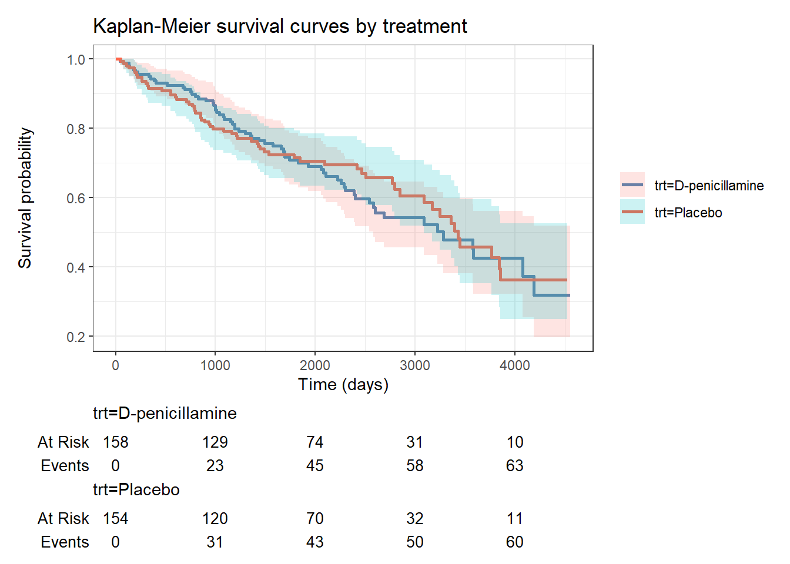
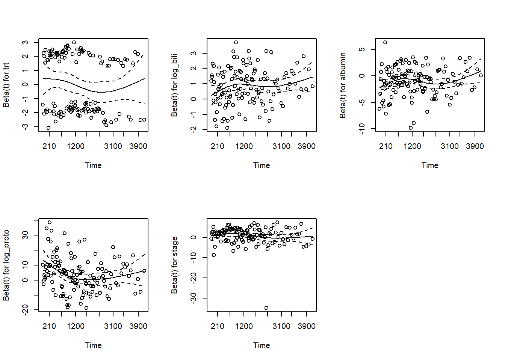
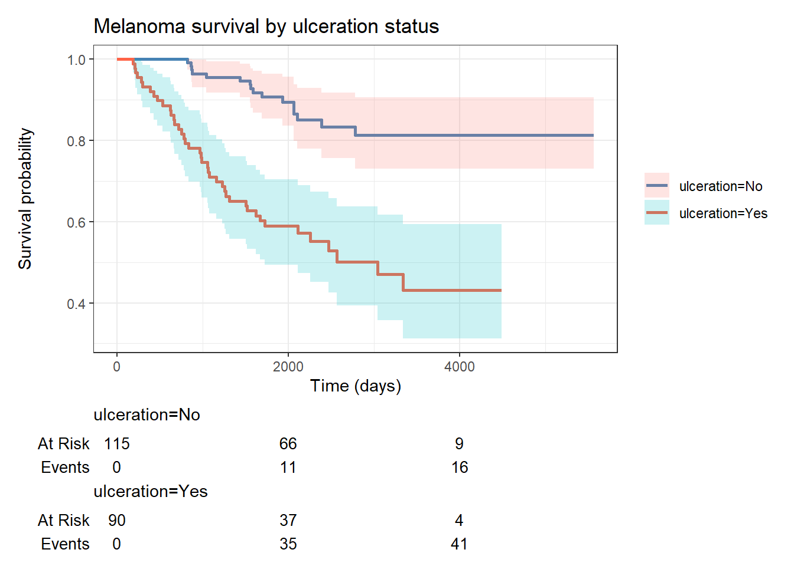
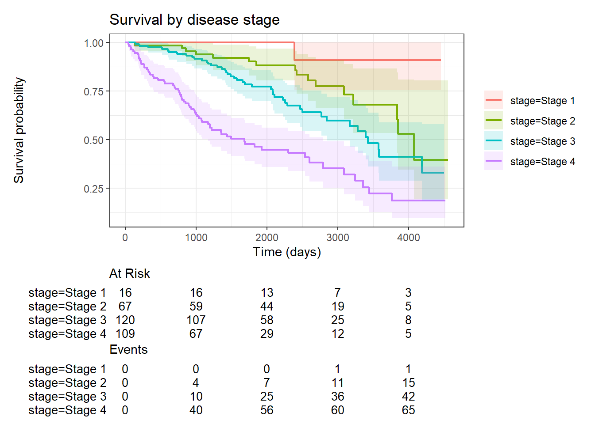

pbc <- survival::pbc %>%
as_tibble() %>%
janitor::clean_names() %>%
mutate(
died = as.integer(status == 2),
trt = factor(trt, levels = c(1, 2), labels = c("D-penicillamine", "Placebo")),
sex = factor(sex, levels = c("f", "m"), labels = c("Female", "Male")),
stage = factor(stage, levels = 1:4, labels = paste("Stage", 1:4)),
log_bili = log(bili),
log_proto = log(protime)
) %>%
filter(!is.na(trt)) # 312 randomised patients22 Survival Analysis and Time-to-Event Data
Before You Start
This session assumes you are comfortable with basic inference (hypothesis testing, p-values) and regression concepts. Complete at least Part 3: Inference and Linear Regression before starting here.
22.1 When Do You Use This?
You followed 418 PBC patients for up to 12 years. Some died, others were censored � they received a transplant, were lost to follow-up, or were still alive at the end of the study. You cannot analyse time to death with a t-test or logistic regression because censoring means you only know a patient survived at least to the censoring time, not their exact death time. Survival analysis handles this correctly.
22.2 Learning Objectives
After completing this session you will be able to:
- Explain censoring and why ordinary regression cannot handle it
- Estimate and plot Kaplan-Meier survival curves and compare groups with the log-rank test
- Fit a Cox proportional hazards model and interpret hazard ratios
- Check the proportional hazards assumption using Schoenfeld residuals
- Extend the model to stratified and time-varying coefficient analyses
22.3 Background: Key Concepts
22.3.1 Time-to-event data
Each patient contributes: - Event time \(T_i\): the time from study entry to the event (death, relapse, etc.) - Event indicator \(\delta_i\): 1 if the event occurred, 0 if censored
Right censoring is the most common type: the event has not happened by the time we stop observing the patient.
22.3.2 The Survival and Hazard Functions
The survival function \(S(t)\) is the probability of surviving past time \(t\):
\[S(t) = P(T > t)\]
The hazard function \(h(t)\) is the instantaneous rate of the event at time \(t\), given survival to \(t\):
\[h(t) = \lim_{\Delta t \to 0} \frac{P(t \leq T < t + \Delta t \mid T \geq t)}{\Delta t}\]
22.3.3 The Cox Proportional Hazards Model
The Cox model relates covariates to the hazard:
\[h(t \mid X) = h_0(t) \cdot \exp(\beta_1 X_1 + \cdots + \beta_p X_p)\]
The hazard ratio (HR) for a one-unit increase in \(X_j\) is \(e^{\beta_j}\). HR > 1 means increased risk; HR < 1 means reduced risk. The baseline hazard \(h_0(t)\) is left unspecified � this is the “semi-parametric” nature of the Cox model.
Proportional hazards assumption: The ratio of hazards between any two covariate patterns is constant over time. This must be checked.
22.4 Worked Example 1: Clinical Data (PBC)
22.4.1 Prepare the Data
22.4.2 Kaplan-Meier Survival Curves
km_trt <- survfit(Surv(time, died) ~ trt, data = pbc)
summary(km_trt, times = c(365, 730, 1460, 2920))Call: survfit(formula = Surv(time, died) ~ trt, data = pbc)
trt=D-penicillamine
time n.risk n.event survival std.err lower 95% CI upper 95% CI
365 149 9 0.943 0.0184 0.908 0.980
730 143 5 0.911 0.0226 0.868 0.957
1460 101 22 0.764 0.0346 0.699 0.834
2920 34 22 0.542 0.0482 0.455 0.645
trt=Placebo
time n.risk n.event survival std.err lower 95% CI upper 95% CI
365 141 13 0.916 0.0224 0.873 0.961
730 135 6 0.877 0.0265 0.826 0.930
1460 93 20 0.740 0.0360 0.672 0.814
2920 33 11 0.605 0.0486 0.517 0.709km_trt %>%
ggsurvfit(linewidth = 1) +
add_confidence_interval() +
add_risktable() +
scale_color_manual(values = c("steelblue", "tomato")) +
labs(title = "Kaplan-Meier survival curves by treatment",
x = "Time (days)", y = "Survival probability") +
theme_bw()
22.4.3 Log-Rank Test
survdiff(Surv(time, died) ~ trt, data = pbc)Call:
survdiff(formula = Surv(time, died) ~ trt, data = pbc)
N Observed Expected (O-E)^2/E (O-E)^2/V
trt=D-penicillamine 158 65 63.2 0.0502 0.102
trt=Placebo 154 60 61.8 0.0513 0.102
Chisq= 0.1 on 1 degrees of freedom, p= 0.7 The log-rank test compares overall survival curves between groups. A significant p-value means survival differs at some point over follow-up.
22.4.4 Estimating Median Survival
km_trtCall: survfit(formula = Surv(time, died) ~ trt, data = pbc)
n events median 0.95LCL 0.95UCL
trt=D-penicillamine 158 65 3282 2583 NA
trt=Placebo 154 60 3428 3090 NAThe median survival is the time at which \(S(t) = 0.5\). If the curve does not drop below 0.5, the median is not reached within the study period.
22.4.5 Cox Proportional Hazards Model
22.4.5.1 Univariable Cox Models
cox1 <- coxph(Surv(time, died) ~ trt, data = pbc)
cox2 <- coxph(Surv(time, died) ~ log_bili, data = pbc)
cox3 <- coxph(Surv(time, died) ~ albumin, data = pbc)
bind_rows(
tidy(cox1, conf.int = TRUE, exponentiate = TRUE),
tidy(cox2, conf.int = TRUE, exponentiate = TRUE),
tidy(cox3, conf.int = TRUE, exponentiate = TRUE)
) %>%
select(term, estimate, conf.low, conf.high, p.value)# A tibble: 3 × 5
term estimate conf.low conf.high p.value
<chr> <dbl> <dbl> <dbl> <dbl>
1 trtPlacebo 0.944 0.665 1.34 7.49e- 1
2 log_bili 2.96 2.47 3.55 2.99e-31
3 albumin 0.166 0.110 0.250 9.85e-1822.4.5.2 Multivariable Cox Model
cox_full <- coxph(
Surv(time, died) ~ trt + log_bili + albumin + log_proto + stage,
data = pbc
)
tidy(cox_full, conf.int = TRUE, exponentiate = TRUE) %>%
select(term, estimate, conf.low, conf.high, p.value) %>%
mutate(across(where(is.numeric), ~ round(.x, 3)))# A tibble: 7 × 5
term estimate conf.low conf.high p.value
<chr> <dbl> <dbl> <dbl> <dbl>
1 trtPlacebo 0.994 0.696 1.42 0.975
2 log_bili 2.30 1.88 2.82 0
3 albumin 0.365 0.23 0.581 0
4 log_proto 48.6 5.27 448. 0.001
5 stageStage 2 4.34 0.559 33.7 0.16
6 stageStage 3 5.49 0.739 40.8 0.096
7 stageStage 4 7.03 0.947 52.1 0.057glance(cox_full) # concordance (C-statistic), log-likelihood, AIC# A tibble: 1 × 18
n nevent statistic.log p.value.log statistic.sc p.value.sc statistic.wald
<int> <dbl> <dbl> <dbl> <dbl> <dbl> <dbl>
1 312 125 186. 1.04e-36 222. 2.56e-44 176
# ℹ 11 more variables: p.value.wald <dbl>, statistic.robust <dbl>,
# p.value.robust <dbl>, r.squared <dbl>, r.squared.max <dbl>,
# concordance <dbl>, std.error.concordance <dbl>, logLik <dbl>, AIC <dbl>,
# BIC <dbl>, nobs <dbl>Interpreting hazard ratios: - log_bili: Each one-unit increase in log(bilirubin) multiplies the hazard of death by [HR]. - albumin: Each 1 g/dL increase in albumin is associated with HR < 1 � protective. - stageStage 4: Patients in Stage 4 have [HR] times the hazard of Stage 1 patients, after adjustment.
22.4.6 Checking the Proportional Hazards Assumption
ph_test <- cox.zph(cox_full)
print(ph_test) chisq df p
trt 1.598 1 0.206
log_bili 0.657 1 0.417
albumin 2.588 1 0.108
log_proto 5.504 1 0.019
stage 8.276 3 0.041
GLOBAL 14.413 7 0.044par(mfrow = c(2, 3))
plot(ph_test)
par(mfrow = c(1, 1))
A significant p-value for a term indicates the hazard ratio for that variable changes over time (non-proportional hazards). If the Schoenfeld residual plot shows a systematic trend, consider: - Stratification: coxph(... + strata(stage), ...) � allows separate baseline hazards by stage, not estimating a stage HR - Time-varying coefficients: tt() in coxph - Restricted mean survival time as an alternative summary measure
22.5 Worked Example 2: Animal Data (boot::melanoma)
Melanoma patients with known follow-up time and vital status.
library(boot)
Attaching package: 'boot'The following object is masked from 'package:survival':
amlmel <- boot::melanoma %>%
as_tibble() %>%
mutate(
died_mel = as.integer(status == 1),
ulceration = factor(ulcer, levels = c(0, 1), labels = c("No", "Yes")),
sex = factor(sex, levels = c(0, 1), labels = c("Female", "Male")),
log_thick = log(thickness)
)
# KM by ulceration
km_ulc <- survfit(Surv(time, died_mel) ~ ulceration, data = mel)
km_ulc %>%
ggsurvfit(linewidth = 1) +
add_confidence_interval() +
add_risktable() +
scale_color_manual(values = c("steelblue", "tomato")) +
labs(title = "Melanoma survival by ulceration status",
x = "Time (days)", y = "Survival probability") +
theme_bw()
cox_mel <- coxph(Surv(time, died_mel) ~ log_thick + ulceration + sex,
data = mel)
tidy(cox_mel, conf.int = TRUE, exponentiate = TRUE) %>%
select(term, estimate, conf.low, conf.high, p.value)# A tibble: 3 × 5
term estimate conf.low conf.high p.value
<chr> <dbl> <dbl> <dbl> <dbl>
1 log_thick 1.78 1.25 2.53 0.00133
2 ulcerationYes 2.56 1.35 4.83 0.00379
3 sexMale 1.46 0.862 2.49 0.159 22.6 Where to Find Data Like This
survival::pbc: 418 PBC patients with time-to-transplant/death, multiple clinical covariates � the primary teaching dataset for this session.
survival::lung: Lung cancer patients with ECOG performance scores � commonly used for Cox model examples.
boot::melanoma: 205 melanoma patients with thickness, ulceration, and survival time.
survival::ovarian, survival::veteran: Further classic teaching datasets in the survival package.
22.7 What Can Go Wrong
Ignoring censoring (using logistic or linear regression) Using a binary “did they die?” outcome discards timing information and biases estimates when follow-up lengths differ. Always use time-to-event methods when censoring is present.
Assuming proportional hazards without checking Cox models assume constant hazard ratios over time. If treatment benefit wanes or emerges late, HRs averaged over the whole follow-up are misleading. Always run cox.zph().
Immortal time bias If covariates are recorded after study entry (e.g., “did the patient receive surgery?”), misclassifying the period before surgery as exposed creates an artificial survival advantage. Use landmark analysis or time-varying covariates to address this.
Competing risks If patients can die from liver disease or be transplanted, transplant is a competing risk for death. Treating transplant as censoring overestimates the probability of death. Use the cmprsk or tidycmprsk package for competing risks analysis.
22.8 Exercises
22.8.1 Exercise 1 (Guided): KM Curves by Disease Stage
Using pbc, plot Kaplan-Meier survival curves separately for each disease stage. Use add_risktable(). Then run the log-rank test. Which stages have significantly different survival?
Exercise 1: Solution
km_stage <- survfit(Surv(time, died) ~ stage, data = pbc)
km_stage %>%
ggsurvfit(linewidth = 0.8) +
add_confidence_interval(alpha = 0.15) +
add_risktable() +
labs(title = "Survival by disease stage",
x = "Time (days)", y = "Survival probability") +
theme_bw()
survdiff(Surv(time, died) ~ stage, data = pbc)Call:
survdiff(formula = Surv(time, died) ~ stage, data = pbc)
N Observed Expected (O-E)^2/E (O-E)^2/V
stage=Stage 1 16 1 9.9 8.00 8.78
stage=Stage 2 67 16 32.3 8.22 11.17
stage=Stage 3 120 43 51.2 1.30 2.22
stage=Stage 4 109 65 31.6 35.17 47.84
Chisq= 53.8 on 3 degrees of freedom, p= 1e-11 22.8.2 Exercise 2 (Semi-guided): Adjusted Cox Model for Melanoma
Using boot::melanoma:
- Fit a univariable Cox model for
log_thick. - Add
ulceration. How does the HR for thickness change? - Add
sex. Compare AIC. - Check proportional hazards with
cox.zph(). Is any variable problematic?
Exercise 2: Solution
m1 <- coxph(Surv(time, died_mel) ~ log_thick, data = mel)
m2 <- coxph(Surv(time, died_mel) ~ log_thick + ulceration, data = mel)
m3 <- coxph(Surv(time, died_mel) ~ log_thick + ulceration + sex, data = mel)
bind_rows(
tidy(m1, exponentiate = TRUE) %>% mutate(model = "1: thickness"),
tidy(m2, exponentiate = TRUE) %>% mutate(model = "2: + ulceration"),
tidy(m3, exponentiate = TRUE) %>% mutate(model = "3: + sex")
) %>%
filter(term == "log_thick") %>%
select(model, estimate, p.value)# A tibble: 3 × 3
model estimate p.value
<chr> <dbl> <dbl>
1 1: thickness 2.28 0.000000107
2 2: + ulceration 1.84 0.000520
3 3: + sex 1.78 0.00133 AIC(m1, m2, m3) df AIC
m1 1 537.8406
m2 2 529.7198
m3 3 529.7398cox.zph(m3) chisq df p
log_thick 6.96 1 0.0083
ulceration 3.65 1 0.0560
sex 1.20 1 0.2728
GLOBAL 7.99 3 0.046122.8.3 Exercise 3 (Open-ended)
Using survival::lung, fit a multivariable Cox model predicting death from ECOG performance score, age, sex, and weight loss. Check proportional hazards. Write a Results paragraph reporting HRs with 95% CIs for each predictor, as you would in a clinical paper. Include a KM plot stratified by ECOG category.
22.9 Comprehension Check
- A patient is censored at 800 days with
died = 0. What does this mean, and how does the Cox model use this data point? - You compare two KM curves with the log-rank test and get p = 0.04. What exactly is being tested?
- The HR for log_bili is 2.1 (95% CI 1.7�2.6). Interpret this in plain language.
cox.zph()gives p = 0.007 for stage. What is the problem, and what are your options?- Your study has 200 patients, of whom 120 were transplanted before dying. Why is treating transplant as censoring a problem?
Answers
- The patient was alive (or otherwise event-free) at 800 days when observation ended � whether by end of study, loss to follow-up, or administrative censoring. The Cox model uses this as a partial likelihood contribution: the patient was in the risk set at all times up to 800 days and did not have the event. Their data provides information about who was at risk but does not contribute a completed failure time.
- The log-rank test evaluates the null hypothesis that the two survival curves are identical over the entire follow-up period � i.e., the expected and observed numbers of deaths are equal across all time points simultaneously. p = 0.04 means the evidence against identical survival curves reaches conventional significance. It does not specify where the curves diverge or by how much.
- Each 2.72-fold increase in bilirubin (one unit on the log scale) is associated with a 2.1-times higher instantaneous rate of dying (hazard), after adjustment for other variables. Patients with bilirubin 2.72 times higher are estimated to die at 2.1 times the rate of otherwise similar patients.
- The proportional hazards assumption is violated for stage � the hazard ratio between stages is not constant over time. Options: (1) stratify by stage using
strata(stage), which allows separate baseline hazards per stage but does not estimate a stage HR; (2) include astage:log(time)interaction term to model the time-varying hazard ratio; (3) use restricted mean survival time (RMST) as an alternative summary that does not assume proportionality. - Transplant is a competing risk for death from liver disease � a patient who receives a transplant can no longer die from the disease. Treating transplant as censoring falsely assumes these patients had the same underlying risk as uncensored patients, which overestimates the cumulative incidence of disease-specific death. The correct analysis uses cumulative incidence functions and the Fine-Gray or cause-specific Cox model to account for transplant as a competing event.
22.10 Further Reading
- Therneau and Grambsch (2000) — Modeling Survival Data: Extending the Cox Model
vignette("survival", package = "survival")� comprehensive package vignetteggsurvfitpackage documentation for publication-quality KM plots- Royston and Lambert (2011) — Restricted mean survival time: an alternative to the hazard ratio (Statistics in Medicine)
Royston, Patrick, and Paul C. Lambert. 2011. Flexible Parametric Survival Analysis Using Stata: Beyond the Cox Model. Stata Press.
Therneau, Terry M., and Patricia M. Grambsch. 2000. Modeling Survival Data: Extending the Cox Model. Springer.